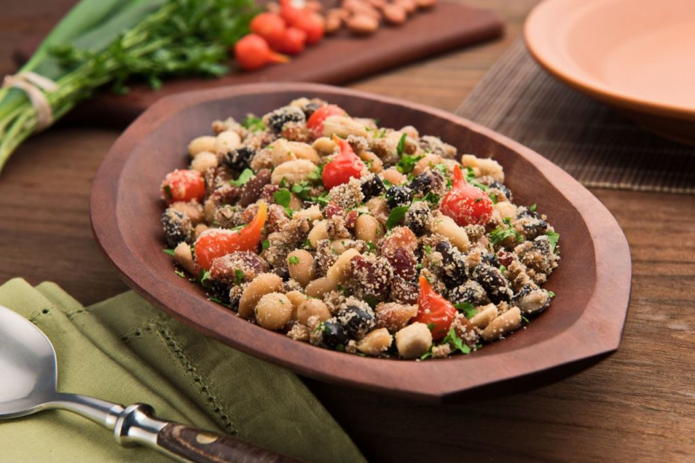
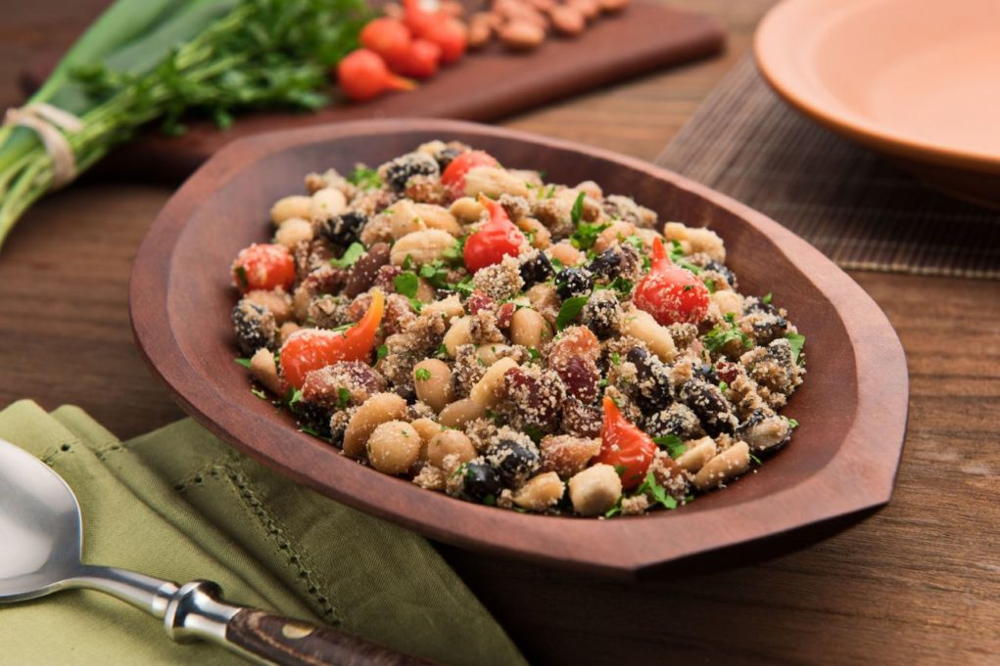
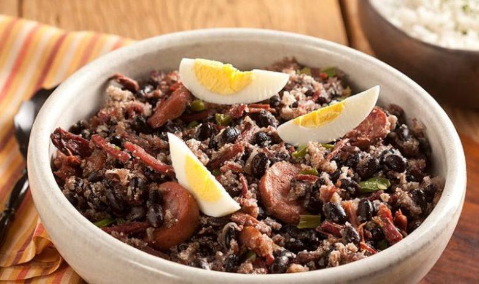
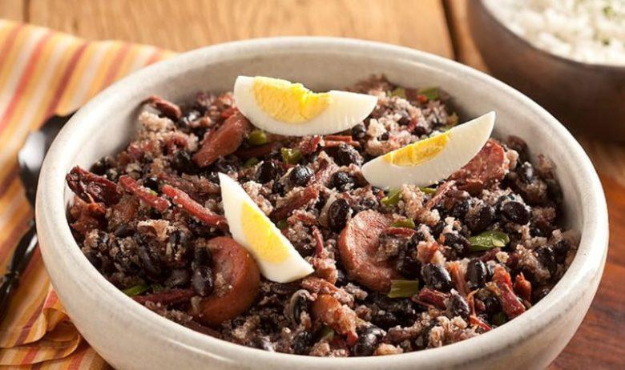

FEIJÃO MEXIDO
 

 

INGREDIENTES:
1 kg de feijão de fradinho ou de corda cozido e escorrido
1 gomo de linguiça calabreza apimentada sem pele
150 gramas de bacon picado
3 xícaras de chá de farinha de mandioca temperada ou farofa pronta
2 cebolas grandes picadas
6 dentes de alho picados
1 maço de cheiro verde picado
MODO DE PREPARO:
1- Esfarele a linguiça e frite bem junto com o bacon,
2- quando estiverem bem fritos junte a cebola e o alho e refogue,
3- desligue o fogo junte o feijão cozido e escorrido a farinha de mandioca e o cheiro verde
4- Para variar você pode acrescentar rodelas de banana nanica bem madura ou mudar o tipo de feijão
Prepare-se para uma explosão de sabores!